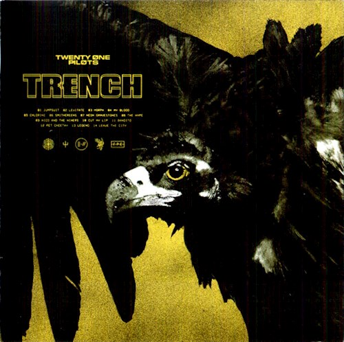

Trench
Trench (estilizado como TRENCH) es el quinto álbum del dúo estadounidense Twenty One Pilots y el tercero como dúo. El álbum fue lanzado el 5 de octubre del 2018. Al igual que sus dos anteriores álbumes, Vessel (2013) y Blurryface (2015), el álbum tiene influencias de distintos géneros musicales, como el rap rock, el R&B, disco, pop rock y reggae. Líricamente, el álbum continua explorando temas de salud mental, duda, suicidio y religión en forma de alegoría.
